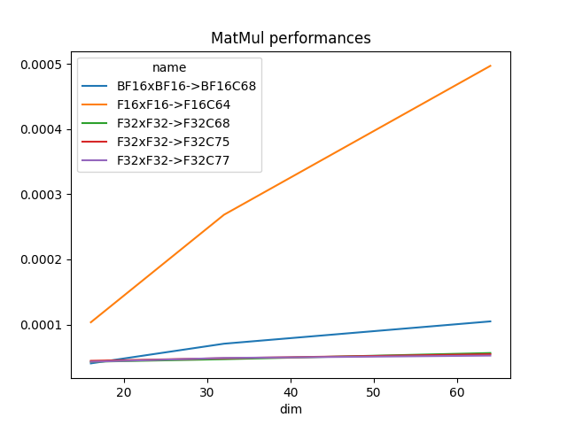
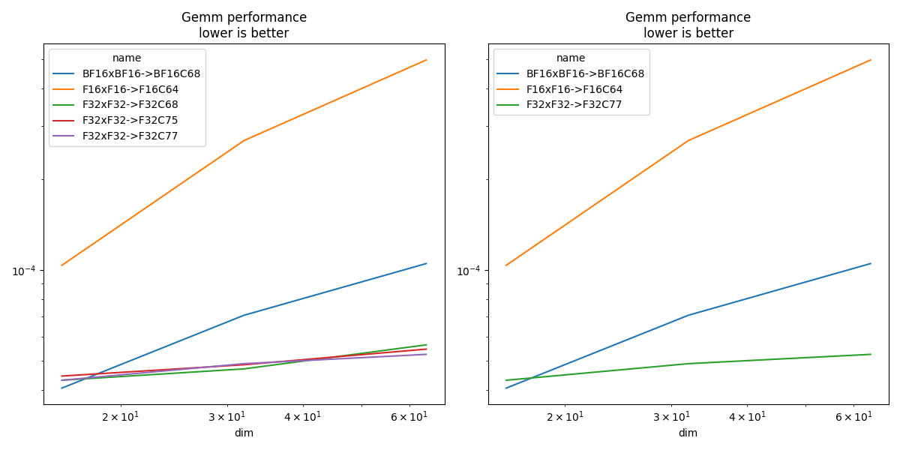

Note
Go to the end to download the full example code
Measuring Gemm performance with different input and output types#
This benchmark looks into various combinations allowed by functions cublasLtMatmul.
import pprint
from itertools import product
from tqdm import tqdm
import matplotlib.pyplot as plt
from pandas import DataFrame
from onnx_extended.ext_test_case import unit_test_going
try:
from onnx_extended.validation.cuda.cuda_example_py import (
gemm_benchmark_test,
get_device_prop,
)
has_cuda = True
except ImportError:
# CUDA not available.
has_cuda = False
Device#
if has_cuda:
prop = get_device_prop()
pprint.pprint(prop)
else:
print("CUDA is not available")
prop = dict(major=0)
{'clockRate': 1569000,
'computeMode': 0,
'concurrentKernels': 1,
'isMultiGpuBoard': 0,
'major': 6,
'maxThreadsPerBlock': 1024,
'minor': 1,
'multiProcessorCount': 10,
'name': 'NVIDIA GeForce GTX 1060',
'sharedMemPerBlock': 49152,
'totalConstMem': 65536,
'totalGlobalMem': 6442319872}
Configurations#
if prop["major"] <= 0:
# No CUDA.
tests = []
dims = []
elif prop["major"] < 7:
# No float 8.
tests = list(range(5))
dims = [16, 32, 64]
elif prop["major"] < 9: # T100, A100
# No float 8.
tests = list(range(5))
dims = [16, 32, 64, 128, 256, 512, 1024, 2048, 4096, 8192]
else:
tests = list(range(15)) # H100
dims = [16, 32, 64, 128, 256, 512, 1024, 2048, 4096, 8192, 16384]
Benchmark#
def type2string(dt):
dtypes = {0: "F32", 2: "F16", 14: "BF16", 28: "E4M3", 29: "E5M2"}
return dtypes[int(dt)]
pbar = tqdm(list(product(tests, dims)))
obs = []
for test, dim in pbar:
pbar.set_description(f"test={test} dim={dim}")
if test in {8, 9, 10, 12, 13}:
# not valid yet
continue
if dim < 128:
n, N = 20, 100
elif dim < 512:
n, N = 20, 50
elif dim < 8192:
n, N = 10, 25
else:
n, N = 3, 5
# warmup
gemm_benchmark_test(test, n, dim)
# benchmark
res = gemm_benchmark_test(test, N, dim)
# better rendering
res["test"] = test
update = {}
for k, v in res.items():
if "type_" in k:
update[k] = type2string(v)
if k.startswith("t-"):
update[k] = res[k] / res["N"]
update["compute_type"] = f"C{int(res['compute_type'])}"
update["N"] = int(res["N"])
update["dim"] = int(res["dim"])
update["name"] = (
f"{update['type_a']}x{update['type_b']}->"
f"{update['type_d']}{update['compute_type']}"
)
res.update(update)
obs.append(res)
if unit_test_going() and len(obs) > 2:
break
df = DataFrame(obs)
df.to_csv("plot_bench_gemm_f8.csv", index=False)
df.to_excel("plot_bench_gemm_f8.xlsx", index=False)
print(df.head().T)
df.head().T
0%| | 0/15 [00:00<?, ?it/s]
test=0 dim=16: 0%| | 0/15 [00:00<?, ?it/s]
test=0 dim=16: 7%|6 | 1/15 [00:01<00:18, 1.30s/it]
test=0 dim=32: 7%|6 | 1/15 [00:01<00:18, 1.30s/it]
test=0 dim=64: 7%|6 | 1/15 [00:01<00:18, 1.30s/it]
test=1 dim=16: 7%|6 | 1/15 [00:01<00:18, 1.30s/it]
test=1 dim=32: 7%|6 | 1/15 [00:01<00:18, 1.30s/it]
test=1 dim=64: 7%|6 | 1/15 [00:01<00:18, 1.30s/it]
test=2 dim=16: 7%|6 | 1/15 [00:01<00:18, 1.30s/it]
test=2 dim=32: 7%|6 | 1/15 [00:01<00:18, 1.30s/it]
test=2 dim=64: 7%|6 | 1/15 [00:01<00:18, 1.30s/it]
test=2 dim=64: 60%|###### | 9/15 [00:01<00:00, 8.51it/s]
test=3 dim=16: 60%|###### | 9/15 [00:01<00:00, 8.51it/s]
test=3 dim=32: 60%|###### | 9/15 [00:01<00:00, 8.51it/s]
test=3 dim=64: 60%|###### | 9/15 [00:01<00:00, 8.51it/s]
test=4 dim=16: 60%|###### | 9/15 [00:01<00:00, 8.51it/s]
test=4 dim=32: 60%|###### | 9/15 [00:01<00:00, 8.51it/s]
test=4 dim=32: 93%|#########3| 14/15 [00:01<00:00, 12.66it/s]
test=4 dim=64: 93%|#########3| 14/15 [00:01<00:00, 12.66it/s]
test=4 dim=64: 100%|##########| 15/15 [00:01<00:00, 9.43it/s]
0 1 2 3 4
t-total 0.000085 0.000055 0.000102 0.000086 0.000059
t-clean 0.000001 0.000001 0.000001 0.000001 0.000001
t-gemm_in 0.000025 0.000009 0.000027 0.000026 0.00001
t-setup 0.000007 0.000009 0.000012 0.000007 0.000011
epiloque 1.0 1.0 1.0 1.0 1.0
compute_type C68 C68 C68 C77 C77
dim 16 32 64 16 32
type_a F32 F32 F32 F32 F32
t-gemm 0.000034 0.000019 0.000041 0.000035 0.000022
type_b F32 F32 F32 F32 F32
t-workspace_new 0.000003 0.000002 0.000003 0.000003 0.000003
type_d F32 F32 F32 F32 F32
N 100 100 100 100 100
algo 11.0 0.0 0.0 11.0 0.0
t-workspace_free 0.000004 0.000003 0.000004 0.000005 0.000003
t-stream_create 0.0 0.0 0.0 0.0 0.0
t-gemm_sync 0.000043 0.000047 0.000056 0.000043 0.000049
workspace_size 1048576.0 1048576.0 1048576.0 1048576.0 1048576.0
t-stream_destroy 0.000032 0.000001 0.000035 0.000033 0.000002
test 0 0 0 1 1
name F32xF32->F32C68 F32xF32->F32C68 F32xF32->F32C68 F32xF32->F32C77 F32xF32->F32C77
Test definition#
name test type_a type_b type_d compute_type
0 BF16xBF16->BF16C68 4 BF16 BF16 BF16 C68
1 F16xF16->F16C64 3 F16 F16 F16 C64
2 F32xF32->F32C68 0 F32 F32 F32 C68
3 F32xF32->F32C75 2 F32 F32 F32 C75
4 F32xF32->F32C77 1 F32 F32 F32 C77
Total time and only gemm#
name test type_a type_b type_d compute_type dim t-total t-gemm_sync
0 F32xF32->F32C68 0 F32 F32 F32 C68 16 0.000085 0.000043
1 F32xF32->F32C68 0 F32 F32 F32 C68 32 0.000055 0.000047
2 F32xF32->F32C68 0 F32 F32 F32 C68 64 0.000102 0.000056
3 F32xF32->F32C77 1 F32 F32 F32 C77 16 0.000086 0.000043
4 F32xF32->F32C77 1 F32 F32 F32 C77 32 0.000059 0.000049
5 F32xF32->F32C77 1 F32 F32 F32 C77 64 0.000066 0.000052
6 F32xF32->F32C75 2 F32 F32 F32 C75 16 0.000058 0.000044
7 F32xF32->F32C75 2 F32 F32 F32 C75 32 0.000057 0.000048
8 F32xF32->F32C75 2 F32 F32 F32 C75 64 0.000099 0.000055
9 F16xF16->F16C64 3 F16 F16 F16 C64 16 0.000113 0.000104
10 F16xF16->F16C64 3 F16 F16 F16 C64 32 0.000286 0.000269
11 F16xF16->F16C64 3 F16 F16 F16 C64 64 0.000526 0.000497
12 BF16xBF16->BF16C68 4 BF16 BF16 BF16 C68 16 0.000050 0.000041
13 BF16xBF16->BF16C68 4 BF16 BF16 BF16 C68 32 0.000115 0.000071
14 BF16xBF16->BF16C68 4 BF16 BF16 BF16 C68 64 0.000129 0.000105
Smaller sets#
if df.shape[0] > 0:
subset = {1, 3, 4, 5, 7}
dfis = dfi[dfi.test.isin(subset)]
print()
print("t-gemm_sync")
pivi = dfis.pivot_table(index="dim", columns="name", values="t-gemm_sync")
print(pivi)
print()
print("t-total")
pivi = dfis.pivot_table(index="dim", columns="name", values="t-total")
print(pivi)
t-gemm_sync
name BF16xBF16->BF16C68 F16xF16->F16C64 F32xF32->F32C77
dim
16 0.000041 0.000104 0.000043
32 0.000071 0.000269 0.000049
64 0.000105 0.000497 0.000052
t-total
name BF16xBF16->BF16C68 F16xF16->F16C64 F32xF32->F32C77
dim
16 0.000050 0.000113 0.000086
32 0.000115 0.000286 0.000059
64 0.000129 0.000526 0.000066
Plots#
if df.shape[0] > 0:
piv = df.pivot_table(index="dim", columns="name", values="t-gemm_sync")
piv.plot(title="MatMul performances")
fig, ax = plt.subplots(1, 2, figsize=(12, 6))
piv.plot(ax=ax[0], title="Gemm performance\nlower is better", logx=True, logy=True)
piv = df[df.test.isin(subset)].pivot_table(
index="dim", columns="name", values="t-gemm_sync"
)
piv.plot(ax=ax[1], title="Gemm performance\nlower is better", logx=True, logy=True)
fig.tight_layout()
fig.savefig("plot_bench_gemm_f8.png")
- 
- 
Total running time of the script: ( 0 minutes 4.664 seconds)